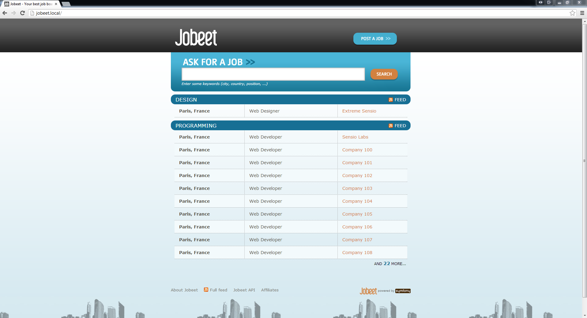
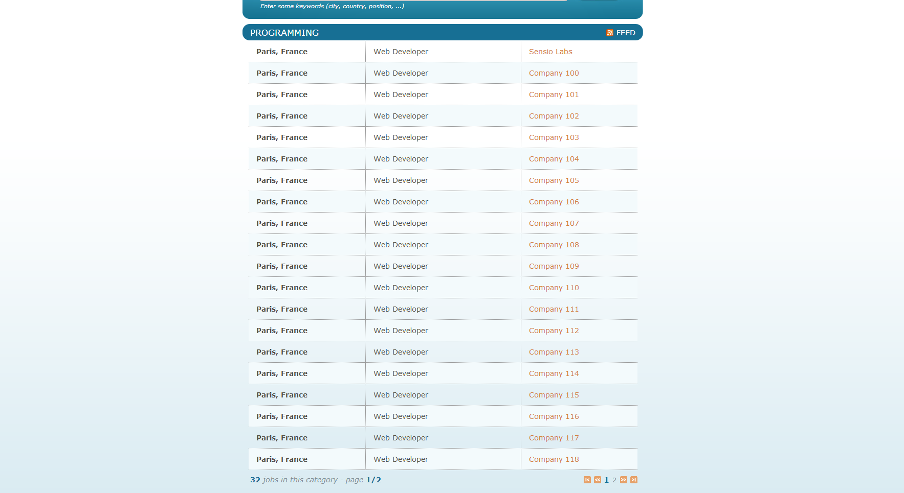

7. 7日目: カテゴリーページ¶
- この記事は Symfony 1.4 向けのオリジナルの Jobeet Tutorial の一部分です。
今日は、 2 日目の要件に記載されているカテゴリページを作成します。
Note
ストーリー F2：ユーザーが特定のカテゴリ内のすべてのジョブを問い合わせることができます 日付順に並べられたカテゴリのすべてのジョブを見ることが出来き、ページごとに20件のジョブでページ分割されています。
7.1. カテゴリールート¶
src/Ibw/JobeetBundle/Resources/config/routing.yml
# ...
IbwJobeetBundle_category:
pattern: /category/{slug}
defaults: { _controller: IbwJobeetBundle:Category:show }
カテゴリのスラグを取得するには、Category クラスに getSlug() メソッドを追加する必要があります。
src/Ibw/JobeetBundle/Entity/Category.php
use Ibw\JobeetBundle\Utils\Jobeet;
class Category
{
// ...
public function getSlug()
{
return Jobeet::slugify($this->getName());
}
}
7.2. カテゴリーリンク¶
ここで、カテゴリページへのリンクを追加するために、ジョブコントローラの index.html.twig テンプレートを編集します。
src/Ibw/JobeetBundle/Resources/views/Job/index.html.twig
<!-- some HTML code -->
<h1><a href="{{ path('IbwJobeetBundle_category', { 'slug': category.slug }) }}">{{ category.name }}</a></h1>
<!-- some HTML code -->
</table>
{% if category.morejobs %}
<div class="more_jobs">
and <a href="{{ path('IbwJobeetBundle_category', { 'slug': category.slug }) }}">{{ category.morejobs }}</a>
more...
</div>
{% endif %}
</div>
{% endfor %}
</div>
{% endblock %}
src/Ibw/JobeetBundle/Entity/Category.php
class Category
{
// ...
private $more_jobs;
// ...
public function setMoreJobs($jobs)
{
$this->more_jobs = $jobs >= 0 ? $jobs : 0;
}
public function getMoreJobs()
{
return $this->more_jobs;
}
}
src/Ibw/JobeetBundle/Controller/JobController.php
public function indexAction()
{
$em = $this->getDoctrine()->getManager();
$categories = $em->getRepository('IbwJobeetBundle:Category')->getWithJobs();
foreach($categories as $category)
{
$category->setActiveJobs($em->getRepository('IbwJobeetBundle:Job')->getActiveJobs($category->getId(), $this->container->getParameter('max_jobs_on_homepage')));
$category->setMoreJobs($em->getRepository('IbwJobeetBundle:Job')->countActiveJobs($category->getId()) - $this->container->getParameter('max_jobs_on_homepage'));
}
return $this->render('IbwJobeetBundle:Job:index.html.twig', array(
'categories' => $categories
));
}
JobRepository クラスに countActiveJobs() メソッドを追加する必要があります。
src/Ibw/JobeetBundle/Repository/JobRepository.php
// ...
public function countActiveJobs($category_id = null)
{
$qb = $this->createQueryBuilder('j')
->select('count(j.id)')
->where('j.expires_at > :date')
->setParameter('date', date('Y-m-d H:i:s', time()));
if($category_id)
{
$qb->andWhere('j.category = :category_id')
->setParameter('category_id', $category_id);
}
$query = $qb->getQuery();
return $query->getSingleScalarResult();
}
// ...
これで、ブラウザに結果が表示されるはずです。
7.3. カテゴリコントローラーの作成¶
src/Ibw/JobeetBundle/Controller/CategoryController.php
<?php
namespace Ibw\JobeetBundle\Controller;
use Symfony\Bundle\FrameworkBundle\Controller\Controller;
use Ibw\JobeetBundle\Entity\Category;
/**
* Category controller
*
*/
class CategoryController extends Controller
{
}
7.4. データベースを更新¶
src/Ibw/JobeetBundle/Resources/config/doctrine/Category.orm.yml
Ibw\JobeetBundle\Entity\Category:
type: entity
repositoryClass: Ibw\JobeetBundle\Repository\CategoryRepository
table: category
id:
id:
type: integer
generator: { strategy: AUTO }
fields:
name:
type: string
length: 255
unique: true
slug:
type: string
length: 255
unique: true
oneToMany:
jobs:
targetEntity: Job
mappedBy: category
manyToMany:
affiliates:
targetEntity: Affiliate
mappedBy: categories
lifecycleCallbacks:
prePersist: [ setSlugValue ]
preUpdate: [ setSlugValue ]
$ php app/console doctrine:generate:entities IbwJobeetBundle
これで Category.php に以下のコードが追加されているでしょう。
src/Ibw/JobeetBundle/Entity/Category.php
// ...
/**
* @var string
*/
private $slug;
/**
* Set slug
*
* @param string $slug
* @return Category
*/
public function setSlug($slug)
{
$this->slug = $slug;
return $this;
}
/**
* Get slug
*
* @return string
*/
public function getSlug()
{
return $this->slug;
}
setSlugValue() 関数を変更します。
src/Ibw/JobeetBundle/Entity/Category.php
// ...
class Category
{
// ...
public function setSlugValue()
{
$this->slug = Jobeet::slugify($this->getName());
}
}
ここで、データベースを削除して、新しいカテゴリカラムと合わせて再度作成し、フィクスチャーをロードする必要があります。
$ php app/console doctrine:database:drop --force
$ php app/console doctrine:database:create
$ php app/console doctrine:schema:update --force
$ php app/console doctrine:fixtures:load
7.5. カテゴリページ¶
src/Ibw/JobeetBundle/Controller/CategoryController.php
// ...
public function showAction($slug)
{
$em = $this->getDoctrine()->getManager();
$category = $em->getRepository('IbwJobeetBundle:Category')->findOneBySlug($slug);
if (!$category) {
throw $this->createNotFoundException('Unable to find Category entity.');
}
$category->setActiveJobs($em->getRepository('IbwJobeetBundle:Job')->getActiveJobs($category->getId()));
return $this->render('IbwJobeetBundle:Category:show.html.twig', array(
'category' => $category,
));
}
// ...
最後のステップは show.html.twig テンプレートを作成することです。
src/Ibw/JobeetBundle/Resources/views/Category/show.html.twig
{% extends 'IbwJobeetBundle::layout.html.twig' %}
{% block title %}
Jobs in the {{ category.name }} category
{% endblock %}
{% block stylesheets %}
{{ parent() }}
<link rel="stylesheet" href="{{ asset('bundles/ibwjobeet/css/jobs.css') }}" type="text/css" media="all" />
{% endblock %}
{% block content %}
<div class="category">
<div class="feed">
<a href="">Feed</a>
</div>
<h1>{{ category.name }}</h1>
</div>
<table class="jobs">
{% for entity in category.activejobs %}
<tr class="{{ cycle(['even', 'odd'], loop.index) }}">
<td class="location">{{ entity.location }}</td>
<td class="position">
<a href="{{ path('ibw_job_show', { 'id': entity.id, 'company': entity.companyslug, 'location': entity.locationslug, 'position': entity.positionslug }) }}">
{{ entity.position }}
</a>
</td>
<td class="company">{{ entity.company }}</td>
</tr>
{% endfor %}
</table>
{% endblock %}
7.6. その他の Twig のテンプレートを含める¶
src/Ibw/JobeetBundle/Resources/views/Job/list.html.twig
<table class="jobs">
{% for entity in jobs %}
<tr class="{{ cycle(['even', 'odd'], loop.index) }}">
<td class="location">{{ entity.location }}</td>
<td class="position">
<a href="{{ path('ibw_job_show', { 'id': entity.id, 'company': entity.companyslug, 'location': entity.locationslug, 'position': entity.positionslug }) }}">
{{ entity.position }}
</a>
</td>
<td class="company">{{ entity.company }}</td>
</tr>
{% endfor %}
</table>
src/Ibw/JobeetBundle/Resources/views/Job/index.html.twig
{{ include ('IbwJobeetBundle:Job:list.html.twig', {'jobs': category.activejobs}) }}
src/Ibw/JobeetBundle/Resources/views/Category/show.html.twig
{{ include ('IbwJobeetBundle:Job:list.html.twig', {'jobs': category.activejobs}) }}
7.7. 一覧のページネーション¶
src/Ibw/JobeetBundle/Resources/config/routing.yml
IbwJobeetBundle_category:
pattern: /category/{slug}/{page}
defaults: { _controller: IbwJobeetBundle:Category:show, page: 1 }
# ...
ルーティング·ファイルを変更した後にキャッシュをクリアします。
$ php app/console cache:clear --env=dev
$ php app/console cache:clear --env=prod
各ページのジョブの数は、 app/config/config.yml ファイルにカスタムパラメータとして定義されます。
app/config/config.yml
# ...
parameters:
max_jobs_on_homepage: 10
max_jobs_on_category: 20
JobRepository クラスの getActiveJobs() メソッドを変更し、 doctrine がジョブを取得する際に $offset パラメータを含むようにします。
src/Ibw/JobeetBundle/Repository/JobRepository.php
// ...
public function getActiveJobs($category_id = null, $max = null, $offset = null)
{
$qb = $this->createQueryBuilder('j')
->where('j.expires_at > :date')
->setParameter('date', date('Y-m-d H:i:s', time()))
->orderBy('j.expires_at', 'DESC');
if($max)
{
$qb->setMaxResults($max);
}
if($offset)
{
$qb->setFirstResult($offset);
}
if($category_id)
{
$qb->andWhere('j.category = :category_id')
->setParameter('category_id', $category_id);
}
$query = $qb->getQuery();
return $query->getResult();
}
//
CategoryController クラスの showAction() メソッドを以下のように変更します。
src/Ibw/JobeetBundle/Controller/CategoryController.php
public function showAction($slug, $page)
{
$em = $this->getDoctrine()->getManager();
$category = $em->getRepository('IbwJobeetBundle:Category')->findOneBySlug($slug);
if (!$category) {
throw $this->createNotFoundException('Unable to find Category entity.');
}
$total_jobs = $em->getRepository('IbwJobeetBundle:Job')->countActiveJobs($category->getId());
$jobs_per_page = $this->container->getParameter('max_jobs_on_category');
$last_page = ceil($total_jobs / $jobs_per_page);
$previous_page = $page > 1 ? $page - 1 : 1;
$next_page = $page < $last_page ? $page + 1 : $last_page;
$category->setActiveJobs($em->getRepository('IbwJobeetBundle:Job')->getActiveJobs($category->getId(), $jobs_per_page, ($page - 1) * $jobs_per_page));
return $this->render('IbwJobeetBundle:Category:show.html.twig', array(
'category' => $category,
'last_page' => $last_page,
'previous_page' => $previous_page,
'current_page' => $page,
'next_page' => $next_page,
'total_jobs' => $total_jobs
));
}
最後に、テンプレートを更新しましょう。
src/Ibw/JobeetBundle/Resources/views/Category/show.html.twig
{% extends 'IbwJobeetBundle::layout.html.twig' %}
{% block title %}
Jobs in the {{ category.name }} category
{% endblock %}
{% block stylesheets %}
{{ parent() }}
<link rel="stylesheet" href="{{ asset('bundles/ibwjobeet/css/jobs.css') }}" type="text/css" media="all" />
{% endblock %}
{% block content %}
<div class="category">
<div class="feed">
<a href="">Feed
</a>
</div>
<h1>{{ category.name }}</h1>
</div>
{{ include ('IbwJobeetBundle:Job:list.html.twig', {'jobs': category.activejobs}) }}
{% if last_page > 1 %}
<div class="pagination">
<a href="{{ path('IbwJobeetBundle_category', { 'slug': category.slug, 'page': 1 }) }}">
<img src="{{ asset('bundles/ibwjobeet/images/first.png') }}" alt="First page" title="First page" />
</a>
<a href="{{ path('IbwJobeetBundle_category', { 'slug': category.slug, 'page': previous_page }) }}">
<img src="{{ asset('bundles/ibwjobeet/images/previous.png') }}" alt="Previous page" title="Previous page" />
</a>
{% for page in 1..last_page %}
{% if page == current_page %}
{{ page }}
{% else %}
<a href="{{ path('IbwJobeetBundle_category', { 'slug': category.slug, 'page': page }) }}">{{ page }}</a>
{% endif %}
{% endfor %}
<a href="{{ path('IbwJobeetBundle_category', { 'slug': category.slug, 'page': next_page }) }}">
<img src="{{ asset('bundles/ibwjobeet/images/next.png') }}" alt="Next page" title="Next page" />
</a>
<a href="{{ path('IbwJobeetBundle_category', { 'slug': category.slug, 'page': last_page }) }}">
<img src="{{ asset('bundles/ibwjobeet/images/last.png') }}" alt="Last page" title="Last page" />
</a>
</div>
{% endif %}
<div class="pagination_desc">
<strong>{{ total_jobs }}</strong> jobs in this category
{% if last_page > 1 %}
- page <strong>{{ current_page }}/{{ last_page }}</strong>
{% endif %}
</div>
{% endblock %}
結果です。
Note

このチュートリアルは、クリエイティブ・コモンズ・ライセンス 表示 - 継承 3.0 非移植 (CC BY-SA 3.0) のもとでライセンスされています。 翻訳の元にしたオリジナルはこちらです。 Symfony2 Jobeet http://www.intelligentbee.com/blog/tag/symfony2-jobeet/.